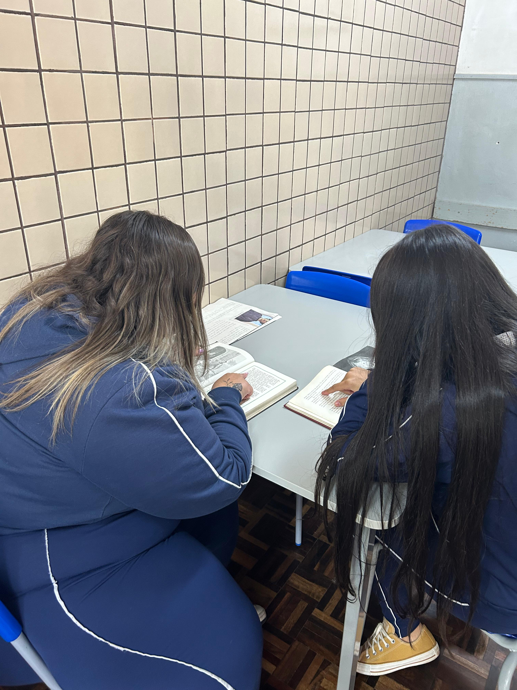
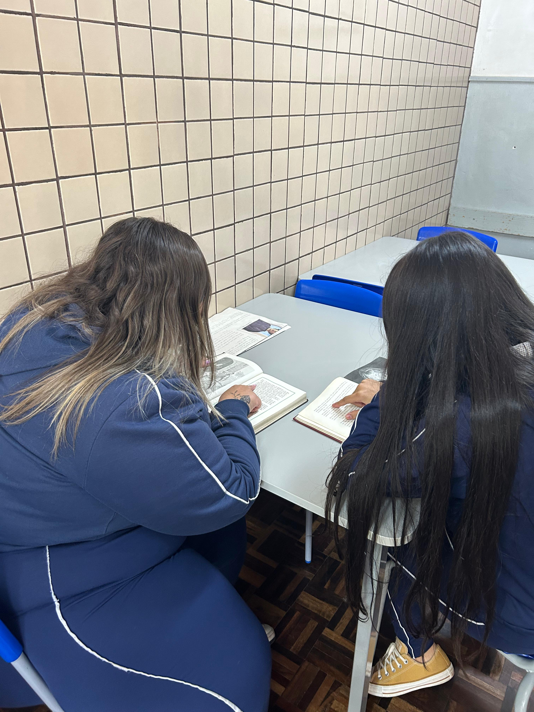
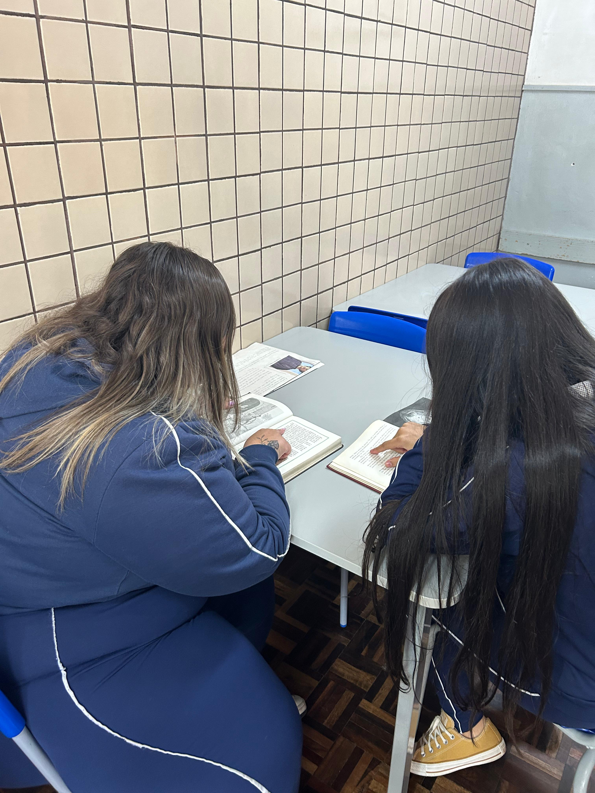

aaaaaaaaaaaaaaa.jpg)
 11.28.58_5156390b.jpg) 

Lucimari Agente 2 da biblioteca , técnica administrativa , ela trabalha com impressão de prova e atividades para os professores, empréstimo de livros , conserva e arruma a biblioteca. Ela fala que é muito bom e que ela gosta de trabalhar na biblioteca, ela contou que tem muitos livros e falou que tem muitas variedades e opções de livros incluindo “literatura infanto-juvenil, quadrinhos, romance estrangeiro e brasileiro, poesia, teatro, contos, crônicas, novelas, filosofia, psicologia, religião, sociologia, meio ambiente, legislação, educação, revistas diversas, folclore, língua estrangeira, língua portuguesa, ciências, biologia, matemática, física, química, arte, educação física, entre outros.” Ela falou um pouco sobre a importância da biblioteca na escola, ela fala que é bom para interação, aprendizado, e para o aprimoramento na escrita, leitura e na dicção. E também contou que a biblioteca serve como expositora de trabalhos, atividades dos alunos.
